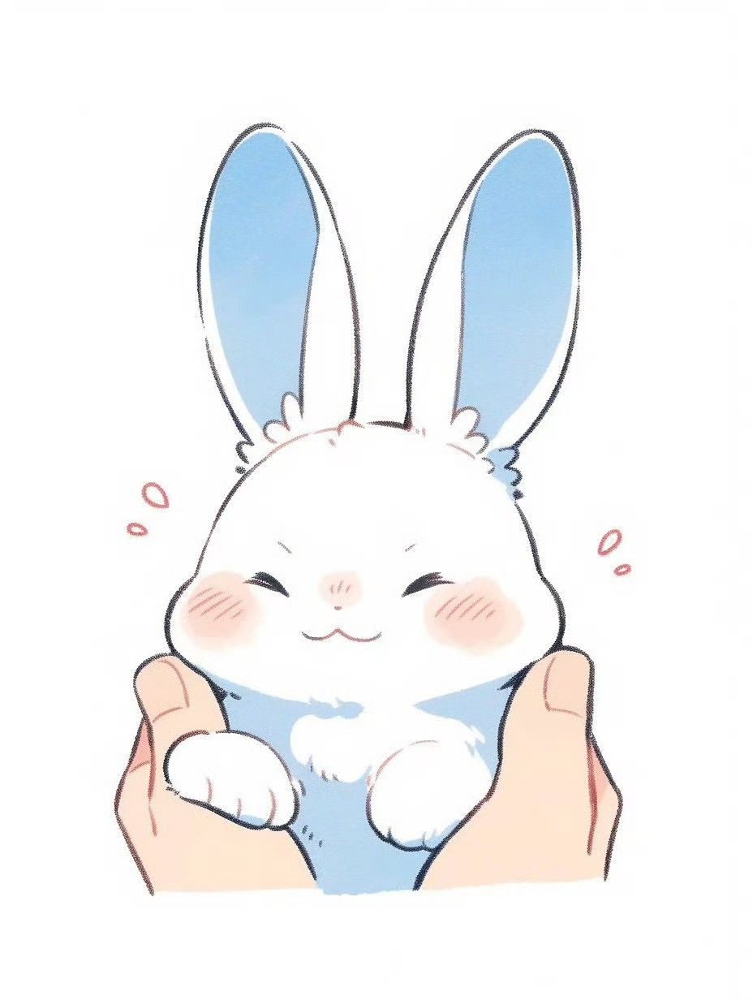

Who Even Am I?

I am currently sixteen years old and will be turning seventeen this year. My real name is Srishti but I go by Sri on online platforms most of the time. I am a student and have a keen interest in history, art, and coding (still chose the non-medical stream for some reason). I am a very extroverted person and love animals very much. I personally dislike people who try to act dominant over others or look superior to them. I am an Indian and can speak Hindi, Maithili, Bhojpuri, English, and Sanskrit. I first studied French in school but later switched to Sanskrit. I am a big foodie and love all kinds of food, especially chicken. I follow Hinduism and my favorite god is Lord Shiva.

My hobbies include reading online books, watching anime and dramas, listening to music, and coding. I also love to travel and explore new places. I adopted a pet rabbit named Chicku. He is just so lovely and cute. My special skills are sports like badminton, tennis, and football. I have played district matches in athletics and won a gold medal in National level Karate championship in 2021. COVID stopped me from competing internationally at that time.
My Art Talent

I think that art is what I inherited from my mother. Not trying to show off but my mother used to be a fashion designer and a professional Madhubani art artist. The sad thing is that we (me and her brother) held her back from her dreams and eventually she gave up that job to take care of us. I will not say that I am creative.....it's probably that I am just good at copying things. Like I do not remember a thing I made from my imagination and it came out successful. I HATE Water Colors.... in starting I do everything perfectly but then I get impatient and ruin the painting.
But I do like sketching and shading things and I think that I am pretty good and actually patient in those kinds of drawings. The two paintings which are displayed are actually made by me (source- got inspiration from Pinterest). The one above is Madhubani painting originated originally from India from a small village in Bihar. Madhubani originally was painted only on gods. The painting below is modern art consisting of proper straight lines and perfect proportions. Do tell me how it looks!!! Also tell me which type of art you like the most.
Now I believe that art is hidden everywhere. Certainly yes, I actually believe that if one looks with no other distraction and looks around them clearly, one can find art in the most unexpected places.
>
School Life
Do I like school???
Bro! Not at all. I hate the fact that I have to wake up so early in the morning, like 5:00 am, and get ready for that stupid school. I hate that we have to wear those ugly uniforms, follow so many rules, and stay seated for 7 hours straight. Like seriously, who thought of this stupid idea of school? We only get a 40-minute period of games in a week and another 40-minute period of art in a week. What are we??? Robots???
Nevermind. The best thing about school is meeting my friends and bunking classes with them. Well, we do get caught easily, as other students cannot mind their own business. The teachers always show favoritism and only favor students who are already good in studies. Do we exist? Are we invisible? Or are we just too dumb to understand?

Maybe I am being way too dramatic.
Why don't you try visiting my school once? I bet you will feel better being in a cell than this stupid school. Just kidding! I do have some good memories in school, like Annual Functions, Diwali Mela, and also, I do not know how much our school earned that year, but Sunil Shetty and Shah Rukh Khan were the chief guests for our annual function. I am not even joking — THE LITERAL RICHEST BOLLYWOOD ACTORS WERE THE CHIEF GUESTS. I guess schools do actually do good things sometimes.
My Studies

With future success in mind I must study. I took non-med as my stream (all stream- commerce/humanities/science (medical/non-medical)). In non-medical we have maths, chemistry, and physics (English is compulsory for all streams) and we have to choose two additional subjects. The choices for first subject: (Music/Painting). The choice for second subject: (Computer Science/Psychology/Physical Education). And yes!!! I chose painting and computer science as additional subjects. The most shocking thing is that I thought that painting would be easy! WELL NOT AT ALL!!! We literally learn about painting, have to write about their writer, color composition, style, why they drew extra-extra like WHY?? WHAT IS THE NEED?

After taking the most difficult stream—science, I just keep wondering if I should have taken commerce. The thing in our society is that if you take science stream, you would get respect and would be talked behind your back and criticised for taking Humanities (also known as ARTS). According to our messed up Indian society, the ones who take ARTS are not good enough!! And the people who are average take up commerce. Well I am one of those people who never had a dream job. For me it works like "I would take the job I perform best in". Well it's not from Science stream as far as I know. Since childhood I have always been very interested in Historical facts and all. But who will convince my parents to change my stream? Anyways, it's already too late to now cry about it.
My Personality

I am an extrovert, not the one who likes to just chat with any random person, but enough extrovert to keep my points in front of others. I must say no one is born categorised as introvert or extrovert. I was very introvert till 3rd grade; then, on changing schools, I got confidence. You may ask where I got that much confidence, right? (Well, at that time I came across students who were mostly from villages and did not understand much of what I was saying) [note: I know that was not a good thing, but I was just a kid. I was used to get bullied, so it was my first time seeing people who were interested in me]. You do not wanna know how dumb I was... really dumb. At that time my own best friend got me slapped by a teacher, and also she used to bully me. LIKE WHAT WAS WRONG WITH ME????

Well, it's all past. Now I have a best friend like an angel, and not kidding, her name is "Angel". She is great, great. In other ways, I am very calm, like way too calm. I do not get offended easily, so I do not say anything to people who talk bad about me. BUT THERE IS ALWAYS A LIMIT TO EVERY LITTLE THING IN THIS WORLD. Once that limit is crossed, you may wanna pray for yourself because I might be the strongest woman you have come face to face with. Well, I do not curse in front of people and call teachers weird names like others (I curse only in text). I usually hate to show my weakness and emotions in front of people because I bet most of them are actual snakes in disguise.
My Idols

In today's world, one must be really living under a rock for decades to not know what BTS is... Haters trying to be cool call it "Behind the Scene" or "Bangtan Toilet Service." Like really? Just because your crush/girlfriend cares more about BTS than you? BTS is one of the best things that happened to me. I cannot afford their merch, cannot afford their light stick and albums, but still there is something special which they ignite in everyone's heart.

People saying that they look like girls?? Well, one should mind their own business. They can be girls, act as one, or even if they are!!! It has nothing to do with us. They sing and we listen; we are not supposed to interfere in their personal life. SORRY, it’s just that there has been a lot going on in 2025. Well, I love them and hope for their best in the future.
My Brother

My brother is four years older than me. When I was born and my brother got allowed to enter the hospital room, he was eating chips, and to show love he decided to share it with me. He literally tried sharing his own chips with his sister (well, it is kind of heart-touching as kids that small do not like to share their snacks with anyone). Well, all my life my mother said that she does not show favoritism at all… you know what? The whole family shows favoritism.
Well, we would have been great siblings if his male teen ego did not kick in. I used to play with my brother and friends, but later he started to drive me out of every plan of theirs. Now he is in college doing internship and stuff, so we again started acting normal. It's like suddenly all toxicity among us has disappeared. Well, I do not like the fact that he is the better kid, student, and sibling. I am tired of all the comparison. What do you mean that we are not like each other? Well, we are not each other; that is why!
My Neighbors
Well, many of my neighbours have been family-friends for years… or should I say family-snakes. They all can fool my mother, brother, father, and grandparents, but I can see right through them. They make fun when one of the relatives is missing. Where is the guarantee that they do not do the same behind our backs? Especially those aunties… whom we would call "Gossiping Unemployed Women". These ladies believe that if any kid of others is doing something amazing, then they are doing bad; but if their kids are doing the same, then they are the God.

I myself have heard them talking about me. Like me??? Imagine being so done with life and useless that you are talking bad about kids with your friends. Does that even make sense? Their husbands are unbelievably loud and so irritating—like what’s so funny about a red car backing into its parking place? All are very dramatic. Those aunties do not have a better thing to do. They wear saris indecently (like there is a decent way) and then judge girls who wear dresses (dresses are a lot… they even judge girls wearing a long dress). Unemployment at its peak.
My Chemistry

Chemistry? Cemistry? I still wonder if we got scammed till grade tenth… like why the chemistry which was the baby subject suddenly turns so hostile. I just gave my midterm and I am pretty sure I am going to fail. Why do you also include JEE Mains and Advance Questions when we are only preparing for 12th Board 2027? Nope, to prove that they teach better, my chemistry teacher likes to make students cry, and for some reason he thinks that he is very cool.

He sounds so lame and weird trying to be cool when he only looks like a plan "Chomu" (meaning- https://search.brave.com/search?q=chomu+meaning&summary=1). He calls students names to their face. He got some personal issues with me and my best friend; he said things like: "Srishti is being controlled by the person on his back!" and "Srishti is the cart and the one sitting and controlling like Krishna is *real name will not be provided* (Angel)". What did we do to you man? I and my best friend and other friends hate him. He is very hatable.
My Maths

Maths… my old rival subject. I had beef with maths since grade 6th, but in final exams I always did a comeback. In 10th, I failed in preboard exam with only 41 marks, but in boards I got 93. I always taught maths to myself and was never actually taught by a teacher (lying—papa laughing in the corner). One could say that I was never interested in hearing, why would I like hearing numbers being recited? In my father's teaching case, something was different and that was "AURA". He gave off a very dangerous aura while teaching, and I hated Sundays when I was younger… The out-of-nowhere line "Go bring your maths book and rough copy" used to send shivers down my spine.

In grade 8th, there was a teacher who was very strict, and I was scolded by her many times, but at least I used to understand what she was saying. My present teacher since 9th grade is just pure pain in my bum bum. He only teaches people who already have studied the chapters and always used to start from the back exercise (the most difficult) without any introduction saying he would teach us from last to first, but we never even finished the last exercise.
My Physics
To be honest, I do not have a single thing to say about this subject. Ok, chemistry exists, maths exists, then why physics exists? The only physics I use in my daily life is common sense, and I have never seen someone opening a book and seeing how to solve their problems which require physics. Just like TikTok, physics should also be banned from our country… nope, the whole world. It just sends students into depression; that is the only thing it does.
Our physics teacher is a nice man, but it's my fault for not understanding what he teaches. It has been nearly three years of him teaching us, but he still does not know our names. Well, I do not have any problems with it, and whenever he wants to call me, he calls me Chiku (coincidentally, my pet has the same name). He is the only teacher who has never shown favouritism towards any specific students.
My Friends
As I said, when I was young, I used to be bullied and accepted everyone to be my friend out of kindness, or one could say, out of loneliness. Now I am very selective of my friends. In my whole life, I have only made 3 best friends. The first one used to bully me. The second one had other friends as priorities. But, you know, there is a fruit for every hardship you go through. My 3rd best friend is the best thing that happened to me, and I bet she would be my best friend for my whole life. When I shifted schools for grade 11th, she wasn't the first friend I made. There were many temporary ones.
My first hater or enemy of this school was… let's call him Namjoon. He hated me a lot, rolled eyes when I used to talk and make faces. Do you know when we first talked? When he came to me asking if I could help his friend in an exam by cheating who was going to sit behind my back. And I did… then we started talking. Later the same year, Namjoon got into a fight with his friend, and they never talked again. In mid-session of class 9th, me, my best friend, and Namjoon became good friends. And we are still good friends. Just before writing this paragraph, I was texting in our group chat with them. Lovely people!!!
Namjoon (My Friend)
Every class has that bully or one could say the naughtiest.....yup this was him.Almost at the end of 9th grade he told us both that he Do have crush on someone from this class while we were playing truth and dare.But he took promise from us to never ask him who, so we actually never did. Then the same year during annual function when i was alone he came to me telling that he have crush on....Bhindi (unreal name..name of a veggie).I looked at him in disgust.Like couldn't you choose someone who is better and doesn't give a playgirl vibe.He told me not to tell Angel but i did afterall she was my bestfriend. Why would i hide from her,and yahh she was shocked too
Well he has was warned by me,Angel and his friends too but you know,he is a dumb man.Let me tell you,he was rude,naughty but actually now he is very respectful and kind of a gentleman.Yup he got cheated on.Lol We (friends) kind of expected this then he suddenly was lik "Oh! i am so relieved that she cheated.".Ya she used to kind of misuse his powers as he was the vice head boy and also used to give advices to our juniors on "How to kiss?"Like why?
Angel
Ohhh my baby! BEST THING HAPPENED TO ME is that i met her. We became friends when we were returning from our trip. We discovered that we both watch dramas and kpop. Now how cool is that? I must say that i was the more experienced one in dramas while she was in kpop. Our vibe matched quick and boom we became friends. Oh my god i remeber her being so introvert and now she is so different.
She has a pet dog named Tobby. Her dog and my pet rabbit kind of are friends. Whenever they meet they sit together side by side. Whenever she gets involved in an argument with others she definetely tells me because she has the trust that i would protect her at any cost. I do not celebrate my birthdays but i more than happy to see her visiting my home for my birthday as an excuse.
Chiku The Rabbit

He is so cute. He is a Newzealand White Rabbit named Chiku. He is just just just just So Chubby and fluffy. His warm body just makes me want to hug him all night. He hates sleeping in dark unfortunately and i already have insomnia so i cannot worsen it with keeping the lights on. So he used to hide and sleep under my bed. So i made kind of a tent on top of my office chair hoping that he would sleep in it seeing a covered roof.
It did! But sitting there whole night he tore the seat! Nice!! Great! Anyways who could get angry at that sweet gullu wullu pullu kuttu thing.
More Of It

Description for photo 5.
The Movies I Like
Not gonna lie I do agree that there are some memorable and epic movies in BOLLYWOOD but i also know that most of those epic movies were copied from somewhere. That somewhere is "South Indian Movies". And recent BOLLYWOOD movies are just terrible brain rots. That is why i love to watch South Indian movies more. I bet i have watched more south indian movies than BOLLYWOOD movies.
My faviorite South Indian movies are: Yevadu1/2, KGF, Vikram, Bahubali, RRR, Lucky the Racer and many more. These movies also have some of the best south indian actors like Allu Arjun, Prabhas, Ram Charan, Surya and many more. But if someone asks me to suggest them bollywood movie, I would suggest them "Taare Zameen Par", "Sitaaren Zameen Par", "Secret Superstar" and the last movie of my faviorite actor Sushant Singh Rajput "Chhichhore" (before he suicide [I still think that it was murder]).